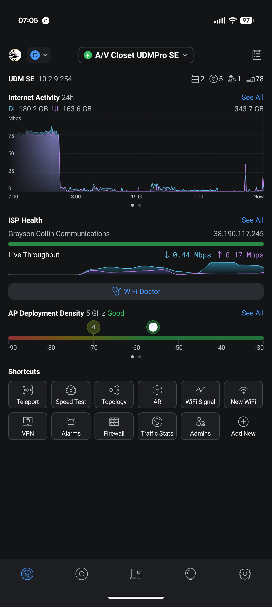
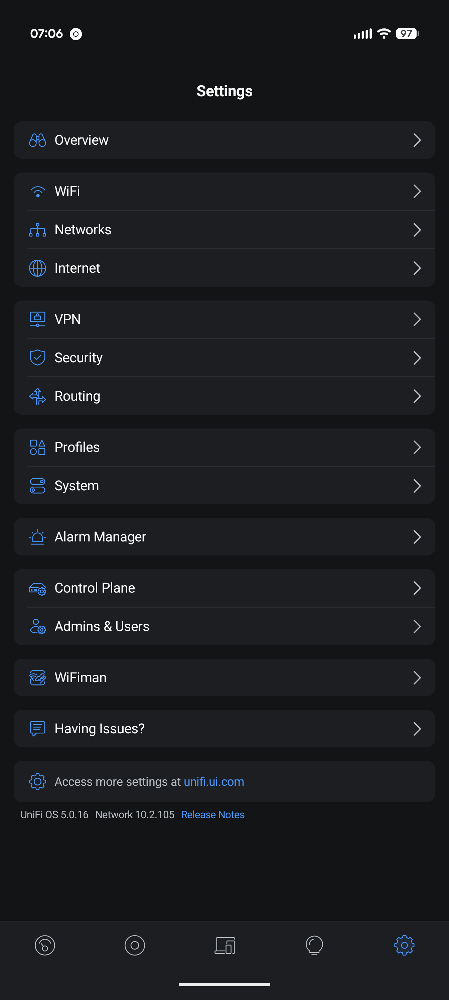
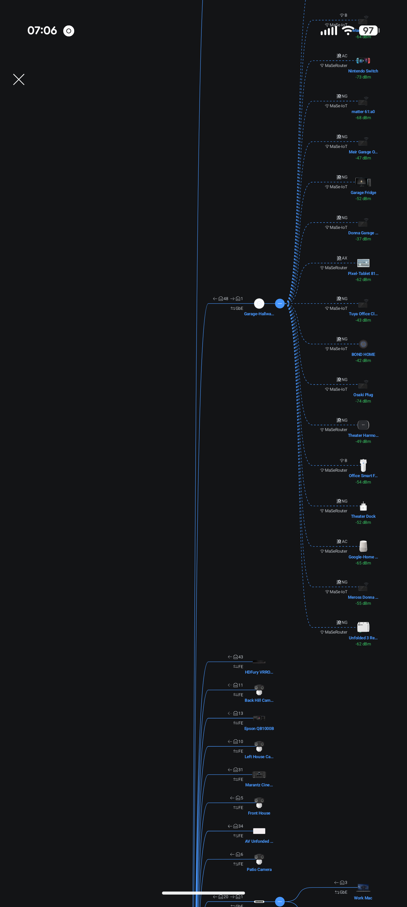

A premium mobile app for Ubiquiti UniFi network controllers. Live dashboards, client and device management, WiFi and VLAN control, firewall policies, port control, VPN, speed test, and multi-site switching — all from your phone, direct to your controller.



Network Deck talks directly to your UniFi controller's local API — whether UniFi OS (UDM Pro, Cloud Gateway, Dream Machine) or a standalone UniFi Network controller. Clients, WiFi, firewall, ports, VPN, and insights, without opening a browser.
ISP health, real-time bandwidth chart with rolling 60-sample window, and customizable cards — system info, DPI traffic, alarms, events, top clients, speed-test history, and quick shortcuts. Tabbed layout you can re-order.
Bandwidth ISP Health DPI Traffic Top ClientsFull client list with WiFi / wired / all filters and signal dBm at a glance. Block, unblock, kick, or forget in bulk. Per-client detail with history, DPI breakdown, fixed IP, user group, and guest auth.
Block / Kick Signal dBm Fixed IP Bulk ActionsCreate, edit, and delete SSIDs (security, band, guest, VLAN, PMF, fast roaming). Manage VLANs with DHCP, IPv6, mDNS, multicast, and isolation toggles. Per-port PoE control and AP radio configuration (channel, TX power, width, band steering, min RSSI).
SSID CRUD VLANs PoE Control AP RadiosPolicies (allow / block / inspect), port forwards, traffic rules and routes, firewall groups, firewall zones with the v2 policy matrix, and DPI app / group controls — all with inline enable / disable toggles. No browser required.
Policies Port Forwards Zones v2 DPIToggle IPS / IDS and pick the mode, content filter per network (work / family / custom), SSL inspection, geo-IP blocking with country whitelist / blacklist, rogue AP scan, and threat history pulled from your controller's alarms.
IPS / IDS Geo-IP Content Filter SSL InspectionGenerate Teleport guest invites with 24-hour expiry. Create site-to-site tunnels with IPsec, OpenVPN, or WireGuard using a pre-shared key. Toggle peer-to-peer and device discovery with a tap.
Teleport WireGuard IPsec OpenVPNRun the controller's built-in speed test with 2-second polling and full history. Local WiFi site survey (Android): channel, signal, security, plus ping, jitter, and packet-loss measurement against Cloudflare endpoints.
Speed Test Site Survey Jitter / LossSwitch between sites in one tap. Live WebSocket event stream with a rolling 200-entry buffer so you can watch the network react in real time. Topology, alarms, backups, admins, and DNS all in reach.
Multi-Site Live Events Topology BackupsA premium, purpose-built interface for UniFi administrators. Dark theme, live data, intuitive navigation — no browser tabs required.
Network Deck supports both UniFi OS consoles and standalone UniFi Network controllers. It auto-detects which endpoints your firmware exposes and adapts the UI to match — features you don't have simply don't appear.
Firmware tolerance: Network Deck auto-detects the endpoints your controller exposes and adapts to firmware-specific JSON variants (field-name drift, type coercion, multiple shapes for the integration API). Sub-admin accounts may see some endpoints return 401 — that's a controller permissions limit, not an app limitation.
Network Deck talks directly to your UniFi controller over your local network (or your VPN). Your credentials and network data never touch a MiyaraHub server.
Enter your controller's hostname or IP, port (default 443 for UniFi OS, 8443 for standalone), and your local admin credentials. Network Deck auto-detects whether you're on UniFi OS or a standalone controller.
Sign in with your local admin username and password. Two-factor authentication is supported end-to-end. Prefer API keys? Use X-API-KEY for programmatic access and skip the cookie flow entirely.
Watch the live bandwidth chart, kick a misbehaving client, toggle a firewall rule, bounce a PoE port, invite a Teleport guest, or switch to another site — every action round-trips to the controller and updates the live event stream.
Network Deck is designed with a privacy-first, local-only architecture. No MiyaraHub account, no cloud relay, no data collection beyond crash reporting.
Everything you need to know about Network Deck.
/rest and /cmd endpoints (with cookie-based session authentication) plus the newer
v2 integration API. It also opens a WebSocket to your controller to stream live events. All communication
happens directly between your phone and your controller over your local network or VPN.
Network Deck is in active development and will launch on both the App Store and Google Play. Get notified at launch.
Get Notified at Launch →